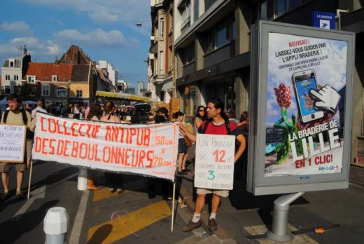
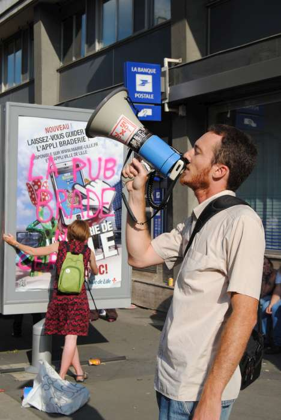
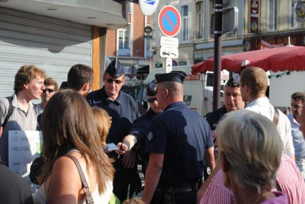

| |
Site dédié à la publication d'informations communiquées par le Collectif des déboulonneurs. En aucun cas ce site n'appelle à des actions illégales. | |
 |
||
|
Accueil du site > Lille > 40e Action du Collectif des Déboulonneurs de Lille – 3 Septembre (...)

Résumé de l’actionDate : Samedi 3 Septembre 2011 Heure approximative de l’action elle-même : de 17h à 18h Lieu de rendez-vous : Place de La République, côté rue Léon Gambetta Description de l’action : Barbouillage de deux panneaux déroulants de la rue du Molinel sur chacune des faces Propriétaire des panneaux touchés : CBS Inscriptions portées sur les panneaux : (sur lesquels fut systématiquement apposé www.deboulonneurs.org)
Nombre d’activistes : une vingtaine de participants Nombre approximatif de passants-spectateurs : beaucoup de passants compte tenu de la Braderie Nombre approximatif de journalistes présents : un journaliste (Voix du Nord) et une vidéaste de Wéo qui s’est adressée à Sébastien avant le début de l’action proprement dite Nombre approximatif de policiers : 5 C.R.S. « débarquant » d’une camionnette stationnée rue Jeanne Maillotte Retombées médias : A venir Toutes les photos : Portfolio 
Compte-rendu détailléPour cette action (la 40ème du Collectif), le rendez-vous était fixé place de la République à l’entrée de la rue Léon Gambetta. La météo prévoyait une dégradation possible de la situation climatique locale en soirée, mais cette dégradation ne s’étant pas produite avant 22 h 30, c’est sous un soleil de plomb que s’est déroulée l’action. Afin d’attendre que la majorité des participants soient présents, le « top départ » a été retardé d’une dizaine de minutes après l’heure de rendez-vous fixée. Le fils de Marion, Marcellin, nous a présenté des biscuits sur lesquels ont « imprimés » les mots « Stop Pub ». Parmi les participants, Sam est venu représenter le « Groupe des Indignés ». Au départ de l’action, d’abord commentée sur place par Sébastien monté avec le haut-parleur sur une armoire de répartition, nous nous sommes rendus place Richebé dans le prolongement de la rue du Molinel à proximité du boulevard de la Liberté « noir » de monde. La banderole portant la mention « Collectif Antipub des Déboulonneurs » a été déployée, soutenue par deux courageux participants. Tandis que Sébastien s’adressait aux bradeux pour leur expliquer le but de la « manœuvre », Marion s’est « attaquée » au panneau déroulant de 2 m² situé près du boulevard de la Liberté. Xavier a ensuite pris la relève pour barbouiller l’autre face du panneau. Le groupe s’est déplacé ensuite rue du Molinel proprement dite en passant devant un « mini car » de C.R.S. stationné à l’angle de la rue Jeanne Maillotte et de la place Richebé. Six de nos participants (dont Maxence) s’étaient habillés en « hommes sandwichs » avec des cartons portant des inscriptions anti-publicitaires. Un deuxième panneau déroulant de 2 m² fit l’objet de barbouillages tandis que Sébastien donnait de la voix avec le mégaphone. Deux C.R.S. se sont alors dirigés vers le groupe, puis sont repartis discuter avec leurs collègues du « mini car » après avoir recueilli les propos de Maxime. Ils sont ensuite revenus vers le groupe avec d’autres C.R.S. et ont demandé les papiers d’identité de Maxime et ceux de Marion. Ils ont joint leur autorité hiérarchique par radio puis ont rendu les cartes d’identité à leurs propriétaires respectifs après avoir reçu consigne de ne pas les emmener « au poste ». Pendant ce temps le calicot du Collectif était largement déployé devant la cabine téléphonique situé à proximité du second panneau barbouillé. Après avoir reçu la décision de leur autorité de tutelle, les C.R.S. ont demandé au groupe des Déboulonneurs d’arrêter l’action et de replier le calicot. L’action s’est donc terminée vers 18 heures rue du Molinel, non loin du « Café Citoyen ». 
|
|
Site utilisant SPIP - Hébergement Ouvaton
|